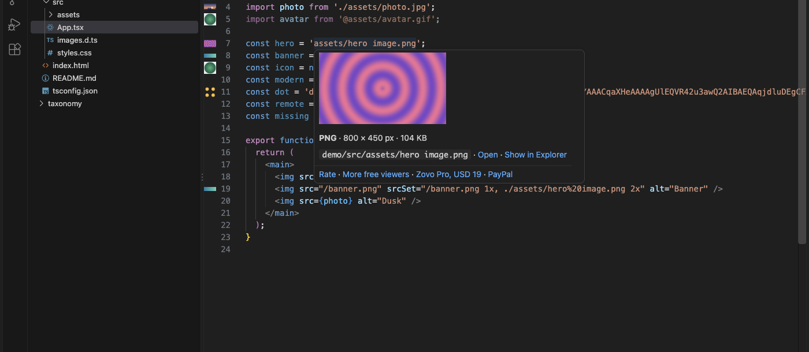

Image Preview & Image Hover
Image Preview & Image Hover, a VS Code extension by Zovo
Image preview by Zovo for VS Code: a thumbnail in the gutter next to every line that names an image, and a hover with the image, its type, its size in pixels and its file size. It works in JavaScript and TypeScript imports, JSX, CSS url(), Markdown, HTML src and srcset, YAML and data URIs. Local files only, no account, works offline.
Free, MIT license. Needs VS Code 1.75.0 or newer. Extension ID zovo.zovo-image-preview, version 0.1.0.

Questions people ask
What is free in Image Preview & Image Hover?
Gutter thumbnails and hover previews for PNG, JPEG, GIF, WebP, AVIF, SVG, BMP and ICO files and for data:image/... URIs. Paths resolve relative to the file, from public/ and other web root folders, @/ for src/, ~, tsconfig.json and jsconfig.json paths, and your own prefixes. No account, works offline.
What does Zovo Pro add?
Three tools, each with 3 free tries: Find unused images (they move to an _unused-images folder, and Edit > Undo moves them back), Find broken image references, and Image weight report. A try counts only when the tool produced its report. The commands end in "(Pro)" and are also in the Explorer right-click menu of folders. Zovo Pro is USD 19 once for every Zovo extension; run "Zovo Pro: Get Zovo Pro" to pay or enter a key.
Does it work over Remote SSH, WSL or in Codespaces?
Not in this version. Remote and virtual workspaces (SSH, WSL, Codespaces, vscode.dev) are not supported, because the hover image is read from the local disk.
Is there a size limit?
Images over 20 MB are measured but not drawn (setting imgPreview.maxFileSizeMB). The hover image is scaled to fit 220 px (setting imgPreview.hoverMaxSize) and never enlarged. Each line gets one thumbnail, for the first image on it; the hover works for every path on the line.
Does it download images or send data?
No. It makes no network requests and has no telemetry. A remote URL shows as a link and is never downloaded. A data URI shown in the gutter is written once to the extension's own storage folder, because VS Code draws gutter icons from files.
Free
- Gutter thumbnails for PNG, JPEG, GIF, WebP, AVIF, SVG, BMP and ICO files, and for
data:image/...URIs (base64 or plain SVG text). - Hover: the image (scaled to fit, never enlarged), then type, width × height in pixels, file size and transparency, with links to open the file or show it in the Explorer. TIFF and HEIC files get their size and type from the header.
- Paths that resolve: relative to the file,
/logo.pngfrompublic/,static/and other web root folders,@/forsrc/,~fornode_modulesor your home folder, tsconfig.json and jsconfig.jsonpaths(withextends), and your own prefixes in a setting. - File names with spaces,
%20,?v=2or#idwork. A plain name such asbeans.jpgin JSON is matched to the nearest image with that name. - Monorepos: each package's own
public/folder and tsconfig.json are used. - A missing image says so in the hover, with the paths it looked for. A remote URL shows as a link and is never downloaded.
- No network requests, no telemetry, nothing shows when VS Code starts.
Zovo Pro
Zovo Pro: USD 19 once. One payment unlocks the Pro tools in every Zovo extension. Each Pro tool has 3 free tries:
- Find unused images: the images in the workspace (or one folder) that no code, style, Markdown, HTML, JSON or YAML file names, largest first. Confirm, and they move to an
_unused-imagesfolder with their folder structure kept; Edit > Undo moves them back. - Find broken image references: every image path in the workspace that points to a file that does not exist, with file and line, in a report and in the Problems panel.
- Image weight report: the heaviest images with their pixel size, totals per type, and flags for files over 200 KB, images wider than 2560 px, photos saved as PNG, BMP and TIFF files, and heavy SVGs. The limits are settings.
The Pro tools are in the Command Palette (they end in "(Pro)") and in the Explorer right-click menu of folders ("Zovo Pro: ..."). A try counts only when the tool produced its report; Escape never uses one. imgPreview.showProTools: false hides all of it.
Run Zovo Pro: Get Zovo Pro to pay by card, with GitHub Sponsors or PayPal (team of 5: USD 59), or to enter a key.
How to use it
Open a file that names an image. Thumbnails show in the gutter; hover a path for the details. Commands under Image Preview in the Command Palette:
| Command | What it does |
|---|---|
| Show or Hide Gutter Thumbnails | Turns the gutter icons off or on (setting imgPreview.gutter) |
| Open the Sample Files | A small demo project with every kind of path |
| Get Started | The walkthrough |
Settings
imgPreview.aliases: extra prefixes, for example{ "@images": "src/assets/images" }. Values are relative to the workspace folder or absolute.imgPreview.publicFolders: folders searched for paths that start with/(defaultpublic,static,src,assets,app,www,wwwroot,docs).imgPreview.hoverMaxSize: longest side of the hover image in pixels (default 220).imgPreview.maxFileSizeMB: larger images are measured but not drawn (default 20).imgPreview.gutter,imgPreview.hover: turn either part off.imgPreview.exclude,imgPreview.weightMaxKB,imgPreview.weightMaxSide,imgPreview.archiveFolder: options of the Pro tools.
Privacy
No network requests and no telemetry. Images are read from your disk only. A data URI that is shown in the gutter is written once to the extension's own storage folder, because VS Code draws gutter icons from files.
Known limits
- Paths built when the code runs (`
- One thumbnail per line: the first image on that line. The hover works for each path on the line.
- Remote and virtual workspaces (SSH, WSL, Codespaces, vscode.dev) are not supported in this version; the hover image is read from the local disk.
- Webpack, Vite or Next.js aliases that exist only in a JavaScript config file are not read. Add them to
imgPreview.aliasesor tsconfig.jsonpaths. - The weight report measures and flags; it does not compress files.
Guides
- See the image behind a path in your code, in the gutter and on hover
- Find the images that no file in your project uses
- Find every image path that points to a missing file
- Find the heaviest images in your project
- See the image behind a base64 data URI in VS Code
- Image Metadata Viewer Online, free in your browser with no upload
Install Image Preview & Image Hover
Click the button to open VS Code and install it, or press Ctrl+P (Cmd+P on macOS) in VS Code and run ext install zovo.zovo-image-preview.
Free, MIT license. Needs VS Code 1.75.0 or newer. Extension ID zovo.zovo-image-preview, version 0.1.0.
Source code and issues are on GitHub.
Zovo Pro and support
Zovo Pro: USD 19 once, every Zovo viewer. It turns on the Pro tools in this extension and in the other Zovo extensions you use. The free features stay free.
After a card payment your license key shows on the next page. Paste it with the command "Zovo Pro: Enter a key".
You can also support the work with no Pro:
Need your format supported?
Open a format request with a sample file, and I reply there whether it can be done. For USD 299 once, through this GitHub Sponsors tier, I add your file format or a missing feature to this extension, with tests, within 7 days.